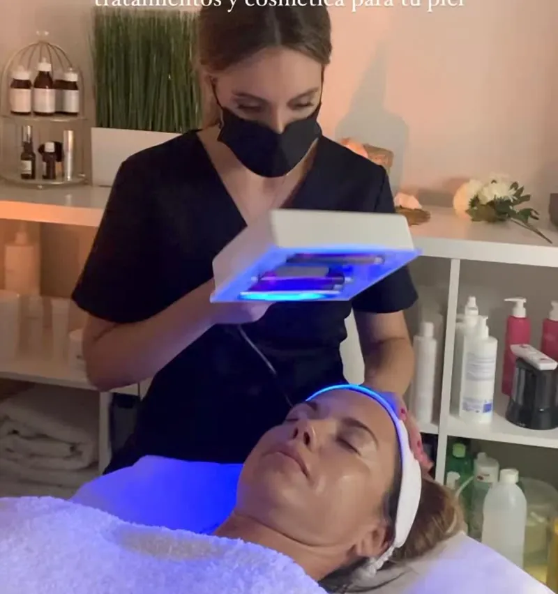
01Faciales
Diagnóstico facial
Analizamos tu piel con equipo de diagnóstico profesional y te asesoramos sobre el tratamiento en cabina y la cosmética más indicada para casa. Sin compromiso y totalmente gratuito.
01Tratamientos faciales
Antes de tocar tu piel, la escuchamos. Cada tratamiento facial empieza con un diagnóstico gratuito con equipo profesional para elegir, de entre más de quince protocolos, el que de verdad necesita tu rostro hoy.
Faciales · Rocío Castelló
Tu piel cambia con las estaciones, con el estrés, con las hormonas y con el paso del tiempo. Por eso en Rocío Castelló no trabajamos con protocolos cerrados: cada facial se decide después de mirar tu piel de cerca, con equipo de diagnóstico profesional, y de escuchar qué te preocupa y qué quieres conseguir.
Combinamos cosmética profesional de alta concentración, técnicas manuales orientales y aparatología de última generación. El resultado es una piel más limpia, luminosa y firme desde la primera sesión, y un plan de cuidado claro para que el cambio dure en casa.
No es sólo un tratamiento facial: es tu hora de desconexión.

01Faciales
Analizamos tu piel con equipo de diagnóstico profesional y te asesoramos sobre el tratamiento en cabina y la cosmética más indicada para casa. Sin compromiso y totalmente gratuito.
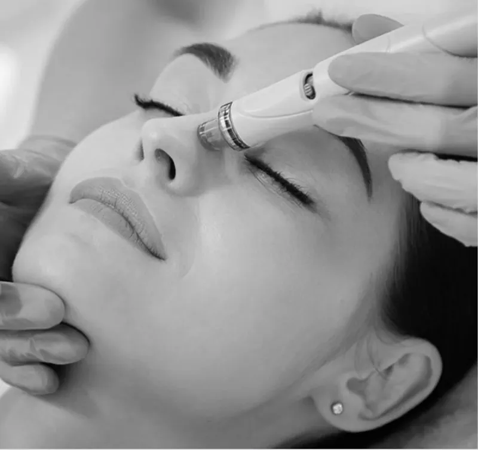
02Faciales
Limpia, desintoxica y devuelve la luz. Con Hydronature combinamos nueve tecnologías en una sola sesión: limpieza, exfoliación, extracción, hidratación y activos nutritivos.
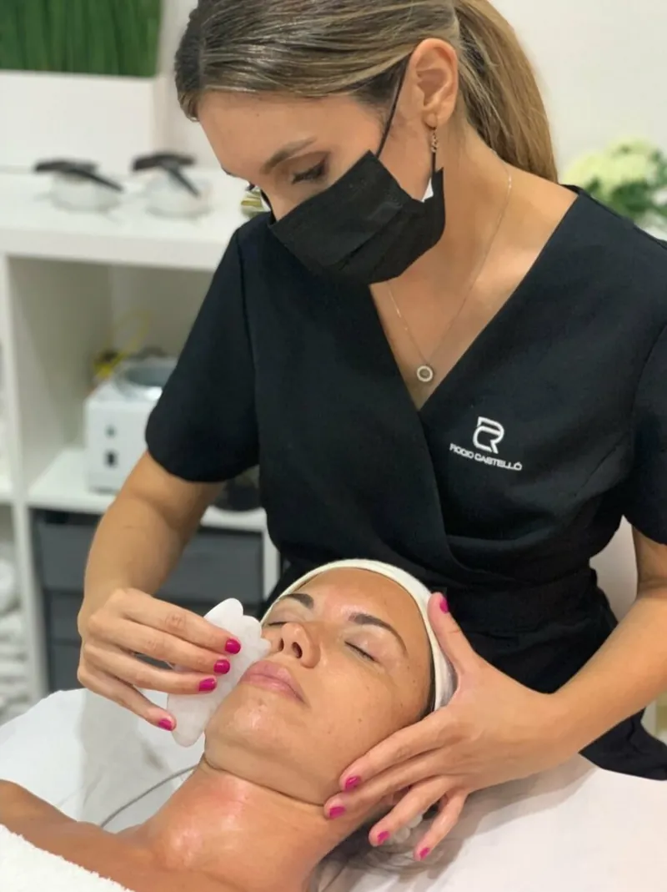
03Faciales
Técnicas orientales milenarias con esencias vegetales para reafirmar, drenar y esculpir el óvalo facial. Un lifting manual que además es tu hora de desconexión.
 04
04Faciales
Peeling Hollywood o carbón activo, peelings médicos y protocolos despigmentantes para unificar el tono y atenuar manchas, incluso con láser Q-Switched.
Carta de tratamientos
18 tratamientos · qué son, para quién y qué vas a notar.
Limpieza en profundidad que elimina impurezas, puntos negros y células muertas, y devuelve a la piel su capacidad de respirar. Termina con mascarilla e hidratación adaptadas a tu tipo de piel.
Todas las pieles, una vez al mes
La higiene completa con un paso extra de restauración: equilibra la producción de grasa, calma y refuerza la barrera de la piel.
Pieles mixtas, grasas o desequilibradas
Nuestro equipo de higiene más avanzado: limpia, exfolia, extrae, hidrata, aplica activos, calma y reafirma en una sola sesión, sin agresividad.
Quien busca una limpieza perfecta y efecto «glow» inmediato
Aporta oxígeno y agua a las capas profundas de la piel. Ideal para pieles apagadas, deshidratadas o castigadas por el sol, el frío o la calefacción.
Pieles apagadas o deshidratadas
Protocolo calmante y reconfortante para pieles reactivas, con rojeces o que pican y tiran. Ingredientes suaves que devuelven el equilibrio.
Pieles sensibles, reactivas o con rojeces
Revitaliza, estimula e ilumina. Activos antiedad y técnicas de masaje que trabajan la firmeza y suavizan arrugas y líneas de expresión.
A partir de los 30, o pieles que pierden firmeza
Equilibra, regula, desinfecta y ayuda a cicatrizar. Tratamos el brote activo y, después, las marcas que deja, siempre con mucha delicadeza.
Pieles con acné activo, adolescentes y adultas
Inhibe la melanina, unifica el tono y despigmenta. Se complementa con peelings y, si hace falta, con láser Q-Switched para manchas resistentes.
Manchas solares, hormonales o por la edad
Exfolia, alisa y rejuvenece. Un protocolo renovador que acelera el recambio celular y deja una textura visiblemente más fina.
Pieles con textura irregular o poros marcados
Rellena e ilumina para lucir buena cara en pocas horas. El favorito antes de una boda, un evento o una foto importante.
Antes de un evento
Drena, rellena, hidrata y despigmenta la zona más delicada del rostro. Bolsas, ojeras y patas de gallo, tratadas con mimo.
Bolsas, ojeras y líneas finas
Dos técnicas orientales milenarias: la piedra Gua Sha esculpe y drena; las ventosas faciales activan la circulación. Todo con aceites vegetales.
Rostros hinchados o tensos, y quien quiere desconectar
El llamado «lifting japonés sin bisturí». Un masaje facial enérgico y preciso que reafirma, remodela e ilumina.
Flacidez incipiente y amantes de los tratamientos naturales
Micropunción controlada que estimula la producción natural de colágeno y elastina y permite que las vitaminas penetren en profundidad.
Cicatrices de acné, poros, manchas y arrugas finas
El tratamiento favorito de las celebrities: una mascarilla de carbón y luz que exfolia, desintoxica y deja un brillo espectacular sin días de baja.
Pieles grasas, poros dilatados o falta de luz
La última generación en regeneración: exosomas y células madre que dan a la piel instrucciones para repararse, con efecto flash y defensa total.
Pieles maduras, cansadas o tras el verano
Oro de 24 quilates para nutrir, iluminar y aportar un efecto rejuvenecedor de auténtico lujo.
Ocasiones especiales y pieles que piden un mimo extra
Retiramos pequeñas verrugas y lesiones benignas de forma rápida y segura.
Verrugas pequeñas en rostro o cuerpo
Antes y después
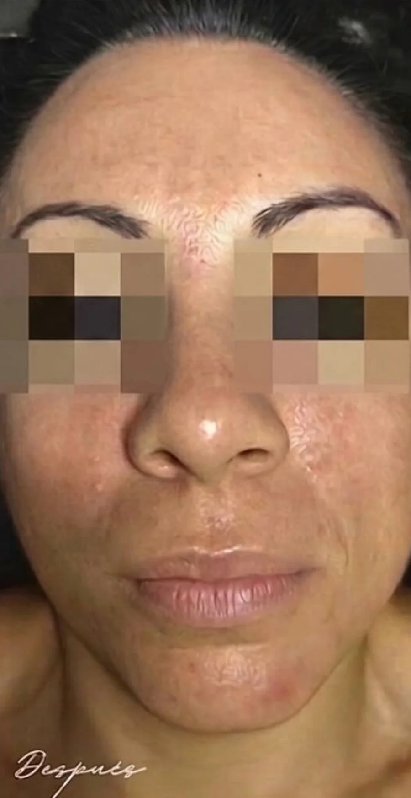
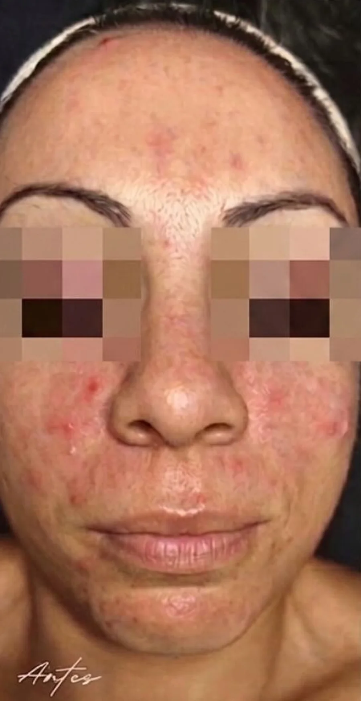
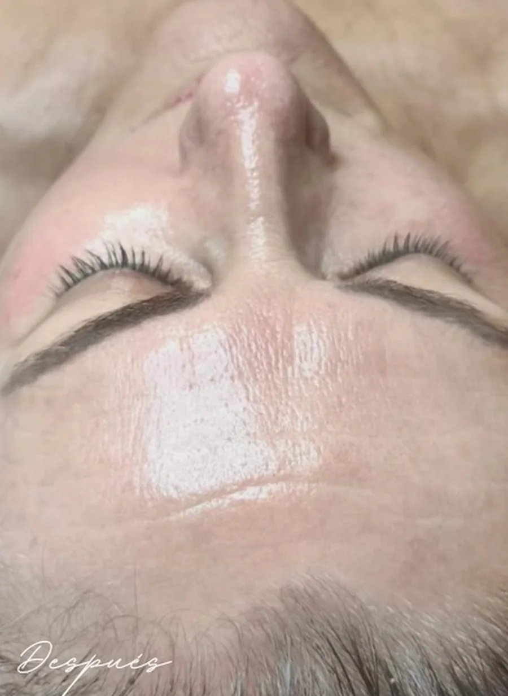
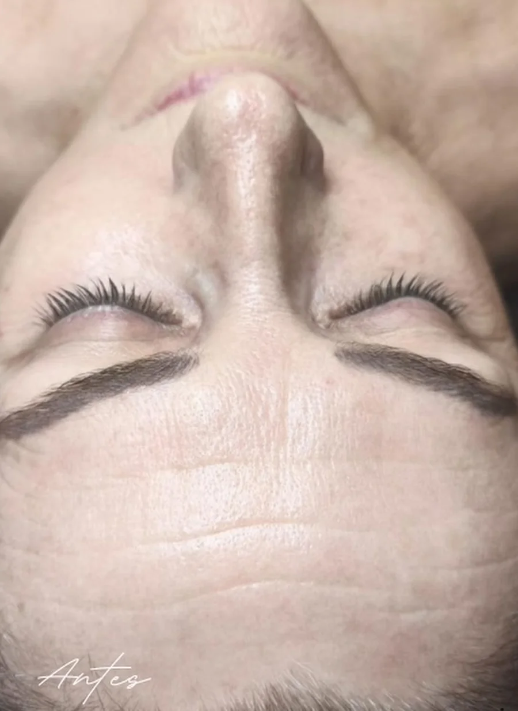
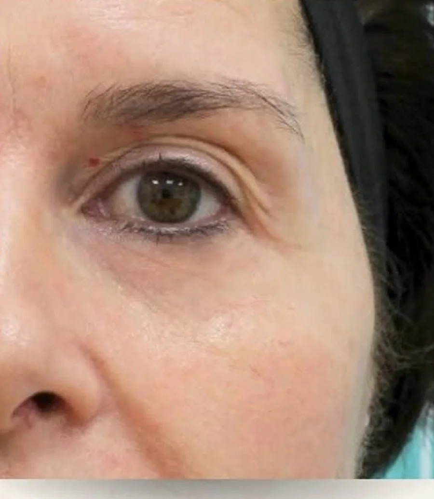
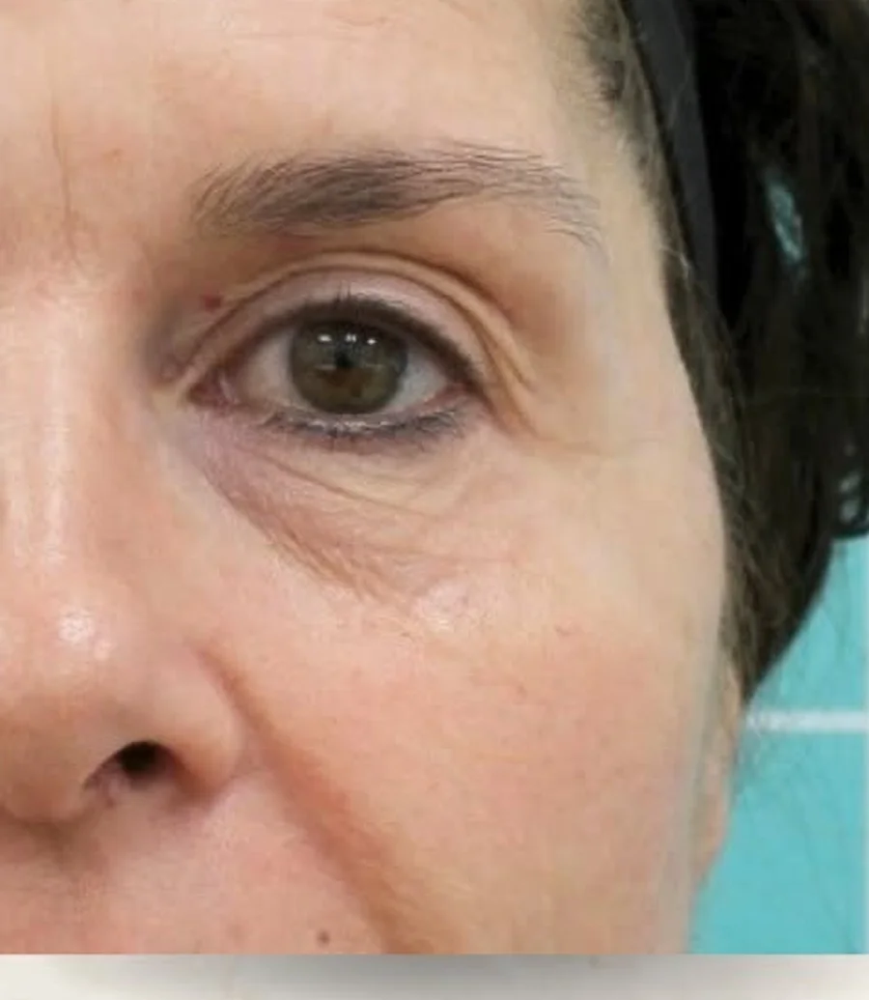
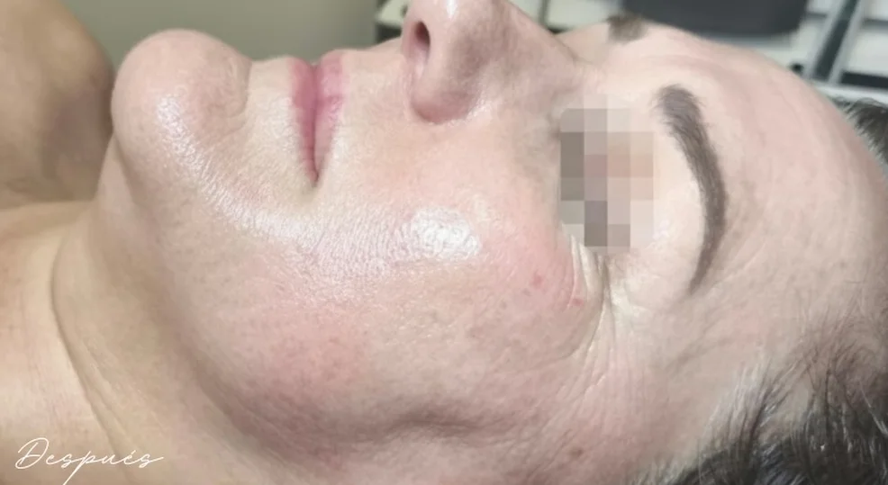
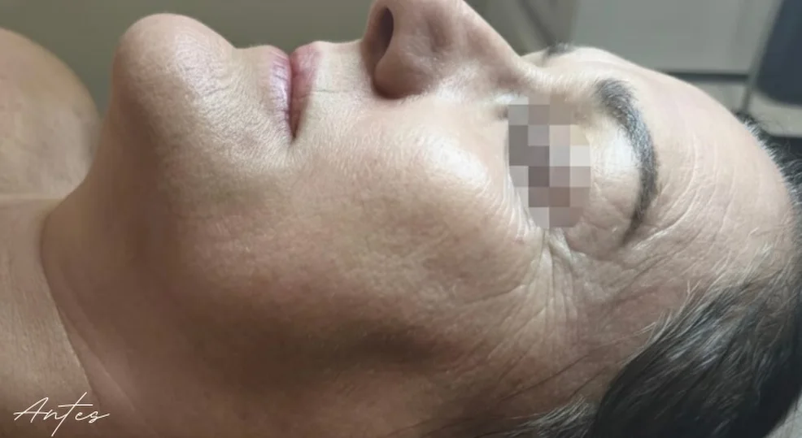
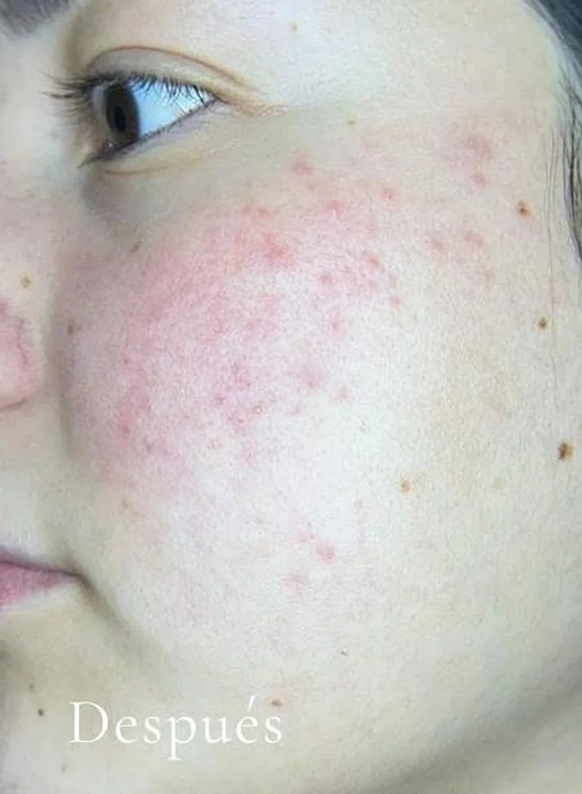
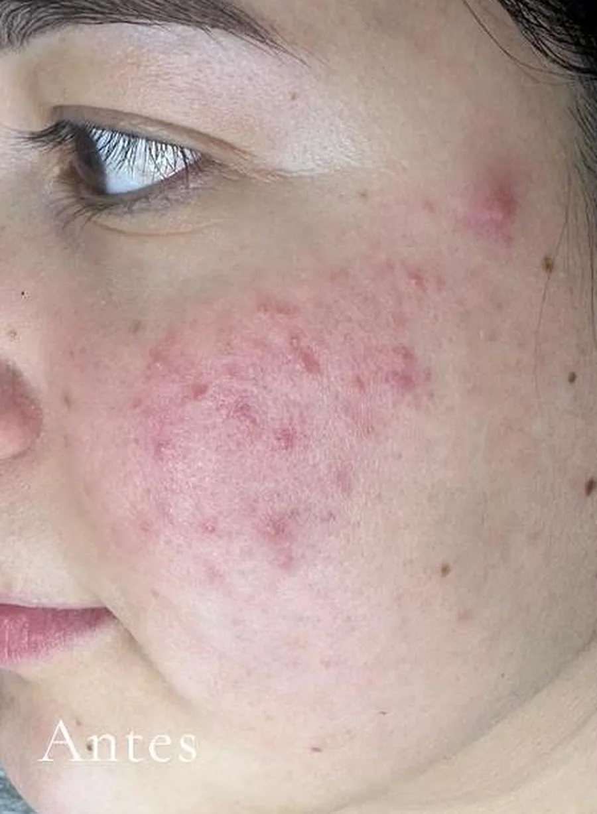
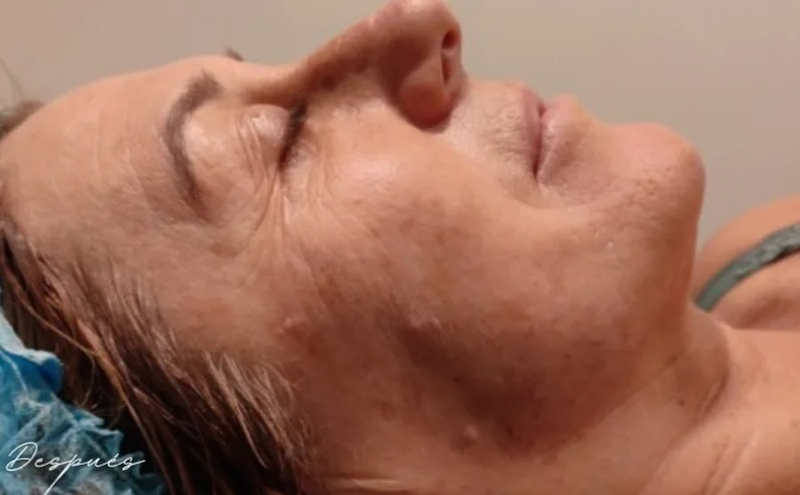
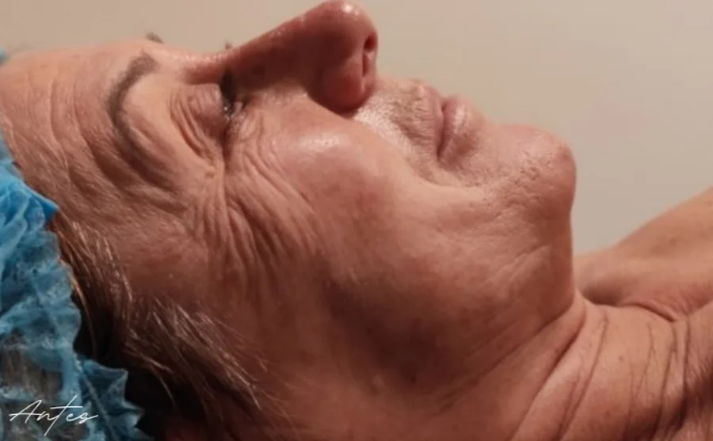
Paso a paso
Analizamos tu piel con equipo profesional y te preguntamos por tu rutina y tus objetivos. Es gratuito.
Desmaquillado, limpieza y exfoliación para que la piel reciba los activos al máximo.
El protocolo elegido para ti: extracción, aparatología, masaje, mascarilla… sin prisas.
Te explicamos cómo cuidarte y qué cosmética usar para que el resultado dure.
Antes y después de tu cita
Galería real
Fotos reales de nuestros centros y clientas.
Míralo en movimiento
Grabado en nuestras cabinas, con nuestras clientas. Así trabajamos cada día: sin filtros, con mimo y técnica.
Ver más en InstagramTarifas
Precios por sesión con IVA incluido. Pregúntanos por bonos y promociones de temporada.
Todas las tarifasDudas frecuentes
Lo ideal es una vez al mes, coincidiendo con el ciclo de renovación de la piel. En el diagnóstico te diremos la frecuencia exacta para la tuya.
No. Es totalmente gratuito y sin compromiso. Lo hacemos antes de cualquier tratamiento en cabina.
Sí, y es el mejor momento. Combinamos despigmentantes, peelings y vitamina C para reparar el daño solar.
Sigue descubriendo
Síguenos
Resultados reales, novedades, promociones de temporada y el día a día de nuestro equipo. Más de 16 mil personas ya nos siguen.

ROCIO CASTELLÓ ESTÉTICA · Salón de belleza
✨ C/ de la Gloria 20, Santomera · 669 024 902
✨ Av. Libertad 7, Barrio del Progreso · 623 510 014